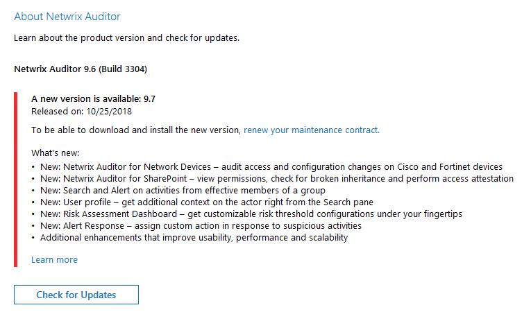

Symptom
Attempting to update Netwrix Auditor generates one of the following errors:
To be able to download and install the new version, renew your maintenance contract
Your subscription plan for Netwrix Auditor has expired

Cause
At least one Netwrix Auditor module has an expired license.
Resolution
Even if you have valid support and maintenance licenses, you might still have some expired licenses. You can delete them by following these steps:
-
Open Netwrix Auditor and select Settings.
-
In the left pane, select Licenses.
-
Select any expired licenses and click Remove.
If you would like to upgrade to the latest product version from a version that is no longer supported, refer to the following incremental upgrade guide: Upgrade Increments for Netwrix Auditor.